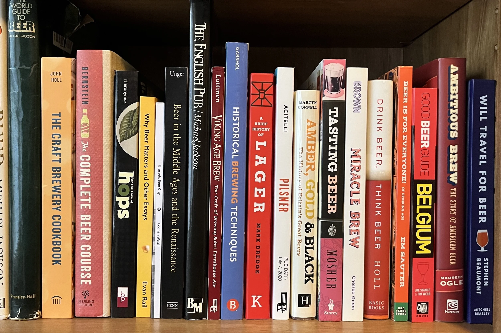

This paragraph uses an ID selector. It also responds to a button that toggles its text color.
This is the introduction paragraph. It contains three full sentences. It is almost winter here in Finland, the days are getting shorter and colder. Summer was a lovely time, everyone was outside enjoying the outdoors and sunbathing.
Sometimes, I create time to study after my work hours but I take short breaks in between because I believe it helps. Now I have to plan, book train tickets, and pick days when I need to visit the school campus. I have task deadlines coming up and I need to make sure I start working on them early and avoid excuses.
Visit Centria Website to learn more about student resources.
This is the first box with its own class.
This is the second box with a different class.